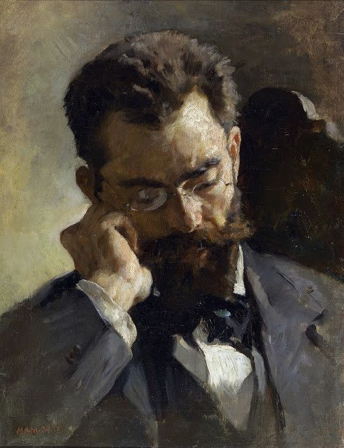

Bento Santiago (Bentinho)
Nome completo: Bento Santiago
Apelidos: Bentinho ou Dom Casmurro
Idade: Aproximadamente entre 15 ao longo da narratativa e 30 ao final
Cônjuge: Capitolina de Pádua Santiago (Capitu)
Personalidade: Sensível, introspectivo, atormentado por dúvidas e ciúmes
Formação: Advogado
Gostos e preferências: Interessado por estudos, religião e, inicialmente, sonhava em ser padre
por desejo de sua mãe
Querida Capitu,
Enquanto minha pena toca este papel, sinto a agonia sufocante de palavras que jamais ousaria
proferir em
voz alta. Estas linhas podem jamais encontrar teus olhos, mas clamam pelo refúgio deste papel,
ansiosas
por despejar o turbilhão de pensamentos que assombram minha alma.
Ah, Capitu, como expressar a tormenta que assola meu ser? O que outrora era certeza e conforto
tornou-se
o abismo de minhas incertezas. Cada olhar teu, outrora luminoso e encantador, agora carrega o peso
de
perguntas sem resposta, sombras que turvam meu coração.
Dentro de mim, a batalha entre a razão e a paixão se desenrola como uma tempestade sem fim. Anseio
por
acreditar em tua inocência, pela pureza de nossos votos e cumplicidade. No entanto, sussurros de
dúvidas
perturbam meu sossego, como sombras dançando na penumbra de nossa história.
Ah, Capitu, se ao menos pudesses compreender a confusão que me consome! Se pudesses enxergar a
tempestade de emoções que obscurece meu entendimento. Temo que cada gesto, cada palavra tua, possa
esconder segredos que minha mente reluta em aceitar.
Não é minha intenção acusar-te, mas sim encontrar a clareza perdida no labirinto de minhas
suspeitas.
Ansiava por te escrever, mas o medo de confirmar minhas angústias me manteve silente. Esta carta
nunca
deixará a segurança deste papel, uma confissão solitária de um coração dilacerado.
Que estas palavras não manchem tua pureza, Capitu, pois são fruto do fardo que carrego, um fardo de
dúvidas que apenas o tempo e o destino poderão esclarecer.
Com a mais profunda e tumultuosa sinceridade,
Bentinho
Autora: Francieli Santana Machado